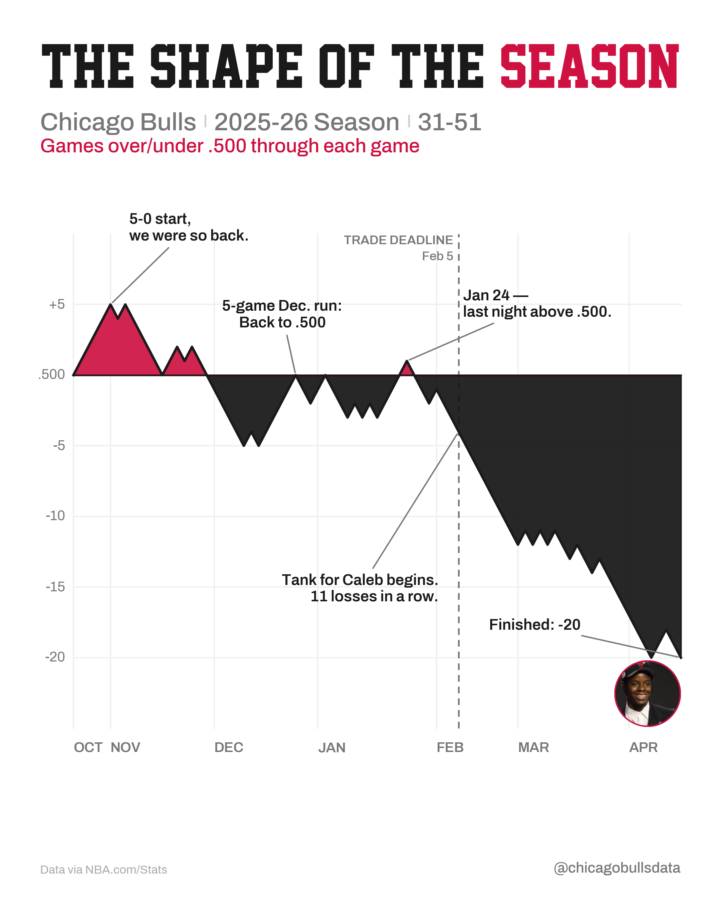
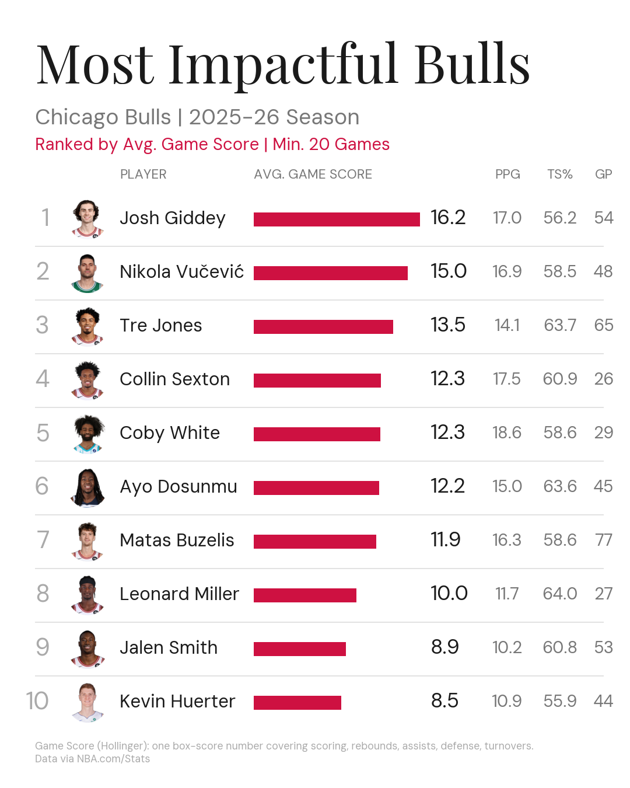
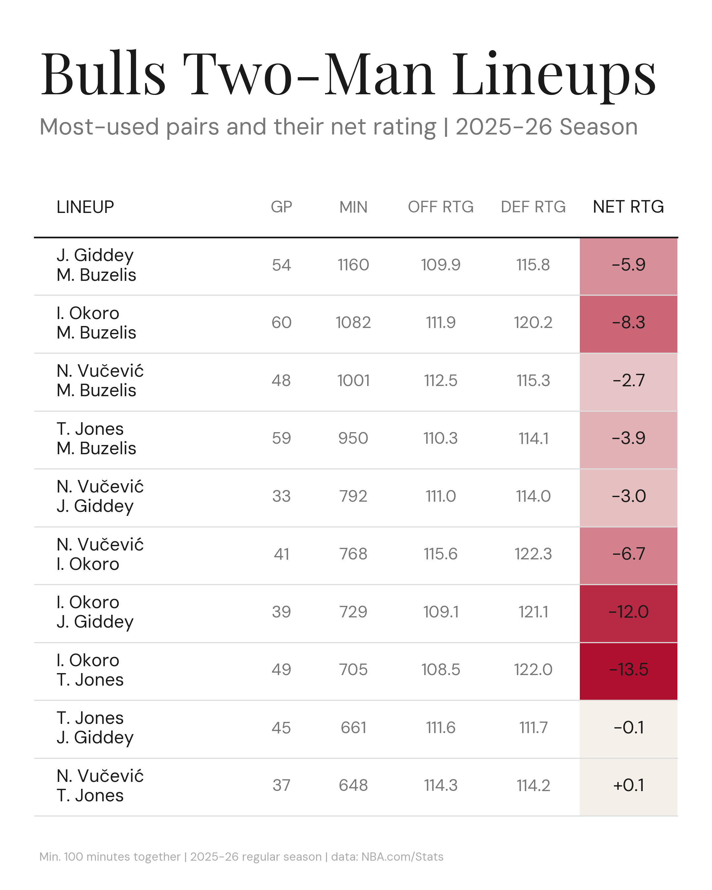
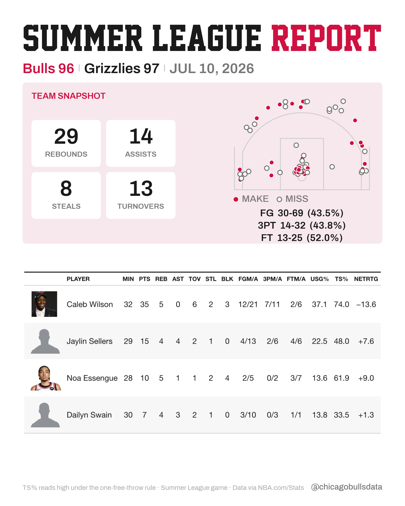

Design System
The rendered companion to DESIGN.md: every token, component, and template, visible.
How to use this file: DESIGN.md stays the canonical prose (decisions + log). This page is the visual spec: what each rule looks like rendered; house.py implements the shared frame and craft.py holds reusable components. When a decision changes, update the owner document, executable house layer, and affected demos together. The theme switcher restyles this document only; the graphics spec it documents is fixed. Spec demos below render on the white default canvas; the four canvas themes (white default + newsprint, blackout, hardwood) are real render options chosen per post via house.new_canvas(theme).
Color
DESIGN.md §2 · bulls/graphics/house.pyRed + black are the only meaningful colors: a thumbnail should read red + black + white before the title is legible. Grays are scaffolding only: gridlines, muted labels, separators. Never gray for a data value that matters.
- RED #CE1141
- Positive, accent, payoff ring.
- BULLS_BLACK #141414
- Negative and heavy fills.
- INK #1A1A1A
- Primary text and data lines.
- MUTED #777777
- Secondary text and labels.
- FAINT #AAAAAA
- Footer and source credit.
- RULE #DDDDDD
- Hairlines and row dividers.
- #CFCFCF
- Subtitle separator ticks.
- #F0F0F0
- Chart gridlines.
- #FFFFFF
- Canvas (white theme, the default; see §03).
Panel tints: scaffolding texture, not meaning
Panel tints from summer_league_report.py: texture for grouping, never encoding; these tints assume the white default canvas.
Colormaps
Magnitude colormap
When a bar or cell’s fill encodes stat magnitude. Sequential; one-directional stats.
Diverging colormap (tables)
Net-rating-style stats centered at zero (TwoSlopeNorm). This red→green pair is not colorblind-safe, so printed signs are mandatory and color never carries the sign alone. Currently table-only; green is an exception inside value cells, never for canvas elements.
Typography
DESIGN.md §3 · assets/fonts/Bevan.ttf (OFL drop-in fallback).Point sizes throughout this document are matplotlib points on the 1080 px canvas at 150 DPI: 1 pt ≈ 2.08 px. Export at 300 DPI doubles pixels, not proportions.
Body face: Archivo, weight selected by file
weight= kwarg is silently ignored for single-file fonts (DM Sans was single-weight for months without anyone noticing). Always select the weight by file: FontProperties(fname="Archivo-600.ttf") via house.body_font("bold"). Instance more weights from the variable font with fontTools.varLib.instancer if needed.Legacy (do not use in new work): Playfair Display + DM Sans remain only in the feed.py zone builders. New posts are Academic M54 + Archivo. Bevan is the OFL fallback title face.
This page’s own body font is doc chrome: it changes with the theme (Barlow Semi Condensed on Jersey, Libre Franklin on Newsprint, …) and says nothing about the graphics. The graphics body face is Archivo, shown above on white.
Canvas & Export
DESIGN.md §4 · house.py1080×1350 px · Instagram portrait 4:5. White canvas by default; one of the four canvas themes below may be chosen per post.
60 px left and right. Title, subtitle, kicker, and footer all anchor here.
Iterate at 150 (fast). Export final at 300 (2160×2700), so text survives Instagram compression. Current prototypes take --final and call house.save_post(..., final=True).
Full-bleed axes (fig.add_axes([0,0,1,1])), data coords = pixel coords, equal aspect, no spines or ticks.
house.CANVAS_WIDTH · house.CANVAS_HEIGHT · house.DRAFT_DPI · house.FINAL_DPI
Canvas themes: four sanctioned canvases, one grammar
A theme is the whole coordinated token set (canvas, ink, quiet tiers, accent, stripe), never just a background fill. White is the default; the alternates are per-post choices made at mock time in the Clarification Gate. house.THEMES holds the tokens; every house draw function takes theme=. Full token table: DESIGN.md §2.
Header Pattern
DESIGN.md §5 · season_shape_post.canvas()Every post opens with the full-bleed jersey stripe, then the same three-line stack, top-left anchored at x=60. Rendered recreation below (values from the reference implementation):
Full-bleed 16 px band at the very top of the canvas: RED with one white and one black pinstripe (top-down: red 4 / white 2 / red 4 / black 2 / red 4) — the same trim as this page’s top band. Default-on. house.draw_jersey_stripe(ax) · draw_header(..., stripe=True)
Academic M54, ALL CAPS, top at y = H−66. Auto-fit so the string fills W−120 exactly, for balanced margins at any copy length. One accent word RED, rest INK. Jersey-lettering outline, default-on: red outer stroke (7 pt) + white gap (3.5 pt) path effects on every glyph. Global switch house.OUTLINED_TITLE; per post draw_header(..., outlined=False). draw_fitted_title(ax, segments, base_size=90)
y = H−168, 18 pt Archivo medium, MUTED. Segments (team · season · record) separated by thin vertical ticks (#CFCFCF, 1.3 lw, ~16 px tall); never "|" or "·" glyphs in rendered text.
y = H−206, 14 pt Archivo medium italic, RED. States the metric in plain words. If the kicker explains the metric, don’t repeat the explanation in a footer.
Footer Pattern
DESIGN.md §6 · craft.threshold_footer()Every graphic. Both items on the same baseline at y=40, quiet. The source credit is a fairness guardrail; it never comes off. The watermark is authorship that survives reposts and screenshots.
The variant joins qualification rule + coverage window + source in one line. Use whenever a board has qualification thresholds. craft.threshold_footer(fig, qualification, coverage, source)
Annotation Grammar
DESIGN.md §7Two visual languages. Every marker must explain a bend in the data; if the line doesn’t turn there, it’s trivia; cut it. Alternate emotional beats with factual anchors so the graphic never reads as a rant or a spec sheet.
Gray dashed vertical: MUTED, 1.2 lw, dash (0,(4,3)). Label stacked, dated, muted: 9 pt Archivo 600 over 9 pt Archivo 500, right-aligned 8 px off the line. Fact rule: anything printed (dates, picks, trades) must be verified; never draw a guessed date.
we were so back.
11 pt Archivo 600, INK, thin straight connector (arrowstyle="-", MUTED, 1.0 lw) to the data point. Voice: fan in the stands: first-person, wry, a notch above meme-page. Names, context, and thesis live in the IG caption, not on the graphic.
Faces
DESIGN.md §8 · craft.headshot_label()The highest-stopping-power object on a graphic; use sparingly. Position so geometry does the pointing: the data line ends at the face; the payoff face can go unlabeled.
Red border = “the payoff.”
border_color=(206,17,65), border_frac≈0.045Circular, no ring: board rows, zone leaders.
_make_circular_headshot(path)Missing photo → neutral disc; builders never break.
_placeholder_disc()Image rule: NBA CDN headshots for new rookies are often the gray silhouette (~12 KB file = silhouette; real ones are 50–200 KB); check visually. Fall back to nba.com/bulls article images (clean, unwatermarked); crop square around the face. Flag wire-photo licensing before using non-NBA sources.
Component Library
bulls/graphics/house.py · craft.pyhouse.py supplies the shared frame; craft.py supplies focused reusable components. Data fetching stays out of both layers: callers pass prepared values and image paths.
gradient bar
gradient_bar(ax, y, value, vmin, vmax, ...)Horizontal stat bar: width and fill both encode magnitude. Zero width at vmin, full length at vmax; fill sampled from MAGNITUDE_CMAP at the same normalized position.
impact_board.py.stacked label
stacked_label(ax, x, y, primary, secondary, ...)Bold name over muted context line. 15 pt Archivo 600 INK / 11 pt Archivo 500 MUTED.
_truncate_name()shot chart / court map
_draw_shot_map(ax, shots, player_id, right, y_center, s, ...)Half-court with every FGA as a marker, hoop at the bottom. Solid RED with white edge = make; hollow with MUTED edge = miss. Legend is mandatory. Deep heaves clamp to the court window (top_y=280).
Court lines: #CFCFCF on white, #C6C6C6 at slide scale, COURT_LINE on pale panels.
Scale s: 0.42 card inset → 1.2–1.5 full-slide.
outlined value text
patheffects.withStroke(linewidth=2.2, foreground=INK)Values on colored bars: white bold with a thin INK stroke, right-aligned inside the bar tip when it fits (width > 110 px); plain INK outside the tip when it doesn’t.
shadowtext). Keeps big numbers legible over gradient fills and photos.stat chips & payoff cards
_stat_chip(...) · _chip_row(...)Bold value over a muted ALL-CAPS label in a rounded container. CHIP_GRAY = scaffolding; solid RED = the payoff (label in #F5C9D6). The big red block is the score anchor on player rows.
player card / story row
_draw_player_row(ax, player, lens, team, shots, y_top, first)One player, one story. Red score anchor on the left; identity + box line in the middle; a single story lens (shot_diet / role / impact) states what mattered. Rows stack at 173 px with RULE dividers.
shot_diet lens adds the card-inset shot map (s=0.42) on the right. One lens per player: the lens that tells the clearest story, chosen at review time.stat table
plottable · Great Tables → cropped PNGA well-set table is a first-class post format, not a fallback. Headshots in cells, striped rows, quiet body columns, and at most one emphasized verdict column on the diverging cmap. Missing values print “—”, never blank.
| PLAYER | MIN | PTS | REB | AST | NETRTG |
|---|---|---|---|---|---|
| Caleb Wilson | 32 | 35 | 5 | 0 | −13.6 |
| Jaylin Sellers | 29 | 15 | 4 | 4 | +7.6 |
| Noa Essengue | 28 | 10 | 5 | 1 | +9.0 |
f5_lineup_table.pyGreat Tables (embedded): rendered to a cropped PNG (zoom=2) and composited onto the white canvas; the table engine owns row rhythm and image sizing. Striping
#F7F7F7; headshots 52 px; labels 12 px bold; padding 11 px; missing → “—”. Env-only dependency for now. summer_league_report._player_table_image()force_sign).threshold_footer(fig, qualification, coverage, source)The fairness-guardrail footer, rendered in §05. 8.5 pt, FAINT, joined with “ | ”.
headshot_label(ax, image_path, x, y, radius, border_color)Circular headshot with placeholder fallback, rendered in §07. Sized by radius in data coords, independent of source pixels.
Template Anatomies
docs/mocks/ · real rendersThe four canonical post formats, shown as the actual rendered output in docs/mocks/. Numbered gutter callouts map regions to the system sections above; focus or hover a legend row to trace it on the render.

FORMAT AChart post: “The Shape of the Season”
- 1
Header stack (§04): fitted title, tick subtitle, red kicker.
- 2
Fan-voice callouts (§06): 3–4 budget; RED above / BULLS_BLACK below encodes the sign.
- 3
Factual event marker (§06): dashed line, stacked dated label.
- 4
Payoff face (§07): red ring, unlabeled; the line ends at it.
- 5
Footer pair (§05): credit left, watermark right, y=40.

FORMAT BRanked board: “Impact Board”
- 1
Header stack; kicker doubles as the qualification line. (This render predates the Academic M54 fitted-title rule; new boards get §04 in full.)
- 2
Row unit: FAINT rank · headshot (§07) · 15 pt name (truncation rule) · RULE hairline dividers.
- 3
Shared-scale RED bars (§08) + bold value; max value = full length.
- 4
Secondary stat columns in MUTED: quiet, centered, 14 pt.

FORMAT CTable post: “Lineup Table”
- 1
Header stack (this render predates the fitted-title rule; new tables get §04 in full).
- 2
Body columns stay MUTED; lineup names bold INK, one player per line.
- 3
One emphasized column: NET RTG value cells on the diverging cmap (§01), the F5 emphasis grammar.
- 4
threshold_footer (§05): min-minutes + coverage + source.

FORMAT DReport card (multi-slide): “Summer League Report”
- 1
Header; subtitle carries the score, Bulls side in RED.
- 2
Tinted section panel with white stat cards, the one panel-background exception; canvas stays white.
- 3
Court graphic only because location is the actual question (make/miss chart; player slides s2–s3 go full-court).
- 4
Player table: headshot + name + stat columns; clean zebra box score, no emphasized column (2026-07-11 decision).
Component Backlog
f5-technique-notes.html · idea-catalog.htmlSpecced or referenced but not yet built. Each has a source pattern and a matplotlib path; when one ships, it moves to §08 and gets a catalog card render.
Small multiples, shared scales PARKED
One mini-chart per player in a grid, ordered by a meaningful stat, axis limits forced equal across facets so panels compare honestly.
Percentile stat cards PARKED
Per-player mini-card: headshot, name plate, 3–5 rounded percentile bars (0–100 vs league) on faint full-scale tracks. Video-game rating card energy.
Five-man lineup board IDEA
The Basketball University lineup board in Bulls clothing: one row per five-man unit (five headshots, a big net-rating pill, a possession-count badge), ranked by possessions played. Dense but obvious.
Unmined F5 formats (from the tutorial index, per f5-technique-notes.html): diamond plots, beeswarms, availability charts, comet plots, matchup tables, shot-clock data. House rule when adopting any of them: take the structure, not the look.
Grid Rules
DESIGN.md §10 · every post, no exceptionsThe grid viewed as a whole is the brand: the template is the identity (the Half Court Mindset lesson). Every feed post shares:
A sanctioned canvas theme, 4:5 portrait: white default, or newsprint / blackout / hardwood (§03) chosen per post at mock time. No other colors, no textures.
The header pattern: Academic M54 ALL-CAPS title with exactly one red accent word, tick-separated muted subtitle, red italic kicker.
Red/black as the only meaningful colors: a thumbnail reads red + black + white before the title is legible.
The footer pair: source credit bottom-left, watermark bottom-right.
One idea per post: the title states it. If the title needs “and,” it’s two posts.
Voice & Caption
DESIGN.md §11ON-GRAPHIC
Minimal, fan voice (§06). Names, context, and the analytical thesis do not go on the graphic; they live in the caption.
IG CAPTION
A knowledgeable Bulls watcher: simple, direct, grounded in the basketball. A plain factual caption is a successful result. No manufactured hooks, slang, rhetorical questions, or engagement bait; humor only when natural or from the user.
Gaps & Open Questions
rebrand parked 2026-07-09 · resume any sessionLogo / avatar mark: three sketched directions (season-shape glyph, data-bull, varsity wordmark); “CBD” lettermark ruled out. brand_logo_candidates.py
Profile picture: depends on the logo; player photo ruled out long-term.
Watermark logo lockup: depends on the logo; text-only watermark until then.
Positioning line + bio: leading candidate: “Chicago Bulls, charted.” with name field “Chicago Bulls Data”. Decision deferred, not the direction.
Story / reel canvas (9:16): needed? No variant of the grid exists yet.
Legacy zone builders: feed.py court graphics still use Playfair + DM Sans and predate the header/footer patterns; migrate when a court post next ships.